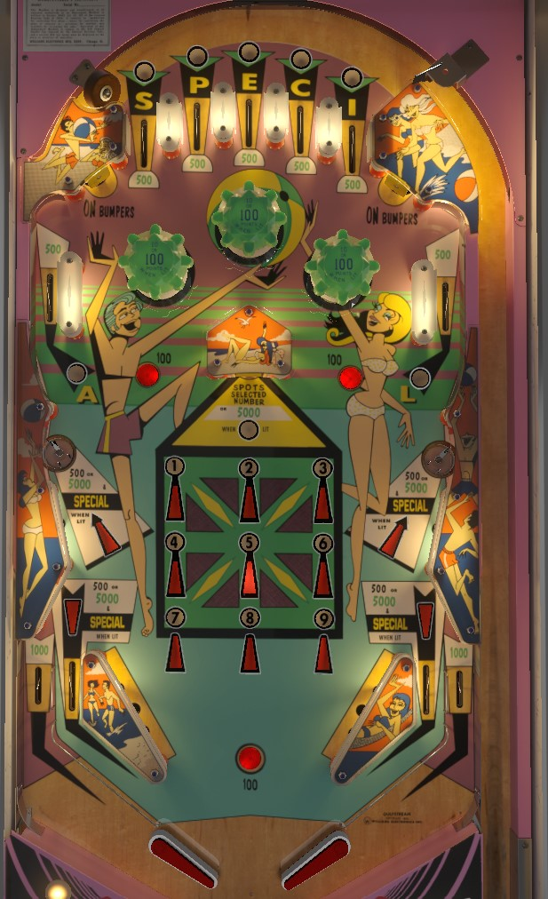

Gulfstream is the replay version. Tropic Fun is the add-a-ball version. Differences observed in Tropic Fun are discussed at the end of the guide.
Complete the word Special at the top lanes and upper side lanes to light the in lanes for 5,000 points and a special. Any 100-point switch moves the selector arrow; hit the center standup target to light the selected number. Making any 3 in a row or 4 corners lights the center target for 5,000 points and the side saucers for 5,000 points and a special. Collecting any special unlights that feature. The 4 corners special may actually give 2 or 3 specials instead. Specials can score replays, added balls, or 10,000 points.
The below picture is of Gulfstream, which was taken from the VPX recreation by Scottacus.
The two upper side lanes and five top lanes are each assigned a letter in the word Special. These lanes always score 500 points. Roll through an unlit lane to light it. On easy settings, the P and C top lanes and the A and L upper side lanes will be tied together so that rolling through either one gives credit for both. On hard settings, every lane must be collected separately. Completing the word Special lights the in lanes to score 5,000 points and one special; this in lane special is always 1 extra ball. Lit lanes are preserved from ball to ball.
Score 10 points, or 100 when lit. Hit one of the standup targets above and near the bumper to score 100 points and light the bumpers for the rest of the ball; they turn off when the ball drains.
Any score of 100 points anywhere in the game rotates the position of the selector arrow in the 1-9 grid. Each advance moves the arrow to the next higher number; after 9, the arrow will return to the center position 5, then after that it goes back to 1 and the sequence resets. Hit the center standup target to light the number that is currently being selected. The center standup target scores 500 points, or 5,000 if there is already a 3-in-a-row or 4 corners completed on the grid. Completing a 3-in-a-row or a 4 corners also lights the side saucers: they score 500 points when not lit, but when lit, they score 5,000 points plus one extra ball (for 3-in-a-row) or 5,000 points plus an operator-adjustable number of specials, which can be as many as three (for 4 corners). Collecting any special(s) from the side saucers resets the grid numbers to be completely unlit; otherwise, lit saucers and collected numbers always carry over from ball to ball. 4 corners specials can score a free game, an extra ball, or 10,000 points.
Gulfstream has a conventional in/out lane setup. In lanes score 500 points, or 5,000 points plus an extra ball if the Special lanes have been completed; collecting the increased score unlights the in lanes. Out lanes always score 1,000 points. Slingshots score 10 points. Rollover buttons, such as the one directly between the lowest corners of the two slingshots, score 100 points and are the easiest way to move the center grid selector arrow exactly 1 position.
There is no end of ball bonus.
Many scores are multiplied by 10. Special lanes score 5,000 points instead of 500. Bumpers score 100 points/1,000 when lit, rather than 10/100 when lit. Lit in lanes, center target, and side saucers score 50,000 points instead of 5,000. Out lanes score 10,000 points instead of 1,000. Accordingly, the game score reels roll over at 2,000,000 points rather than 200,000.
Specials can never be set to award free games. I do not know if there is a novelty setting, or if there is, whether the point value of a special has been increased from 10,000 to 100,000 points.